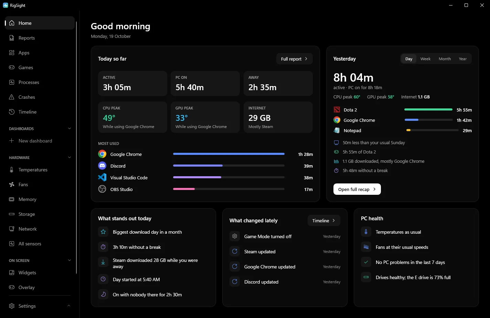

Home
3h 35m
Active so far today, with the PC on for 6h 18m. Yesterday sits right beside it.
Open it and your day is already there.
Time at the PC, the day's CPU and GPU peaks and what caused them, your most used apps, what changed lately and how your PC is doing, on one page.
